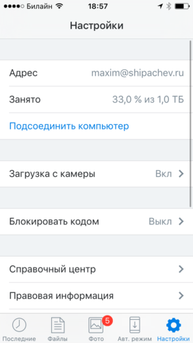
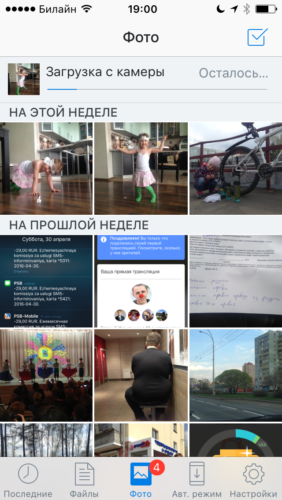

Яжкомпьютерщик. По этой причине мне, немного чаще чем остальным, задают вопросы вроде «как восстановить фотографии на телефоне», «что делать, если фотографии с телефона исчезли», «потерял телефон, хочу вернуть хотя бы фотографии».
Термин «смартфон» был введён компанией Ericsson в 2000 году для обозначения своего нового телефона Ericsson R380s.
Этим вопросам столько же лет, сколько смартфонам. Самое неприятное, что, если для телефонов с Андроидом ещё могут быть какие-то варианты восстановления фотографий, особенно, если они хранятся на внешней карте памяти, то в случае с айфоном вся ваша сфотографированная жизнь почти гарантированно канет в Лету.
Рецепт, не потерять фотографии вместе с телефоном существует давным давно. Я всегда говорю о нём тем, кому уже поздно, но сейчас напишу всем. Правда, подозреваю, что кто-то его уже использует, но многие — нет. Он требует кое-каких рутинных действий, может быть рутина пугает людей?
Итак, рецепт заключается в следующем:
Нужно установить на телефон Dropbox и один раз настроить его. Справедливости ради нужно сказать, что есть альтернативные рецепты, вроде установки Яндекс.Диска или Гугл.Фото. Но я напишу о том, чем пользуюсь сам.
Dropbox — один из самых полезных сервисов, придуманных человечеством.
Может быть мои слова о полезности будут убедительней, если я скажу, что плачу за него по $10 ежемесячно. Но для хранения фотографий с телефона вы можете не платить ничего.
Итак, установив однажды Dropbox на смартфон, вы получаете 2 гигабайта в облачном хранилище бесплатно. Это не очень много, но об этом чуть дальше.
После установки, нужно настроить автоматическую выгрузку фотографий с телефона в Dropbox. Чтобы экономить мобильные траффик, лучше при этом отключить загрузку при отсутствии Wi-Fi.
С этого момента все ваши фотографии автоматически будут загружаться в облачное хранилище. После того, как фотографии выгрузились в Dropbox, вы можете смело удалять их с телефона, освобождая место для новых.
Вернёмся к гигабайтам. 2 гигабайта это немного, тем более, если вы любите снимать видео.
Что делать, если не хватает места в Dropbox:
1. Вы, как и я, ежемесячно оплачиваете расширенную версию сервиса $10 долларов в месяц или $100 в год. Это дорого, но вы получаете в распоряжение целый терабайт. Но вряд ли это рентабельный подход, если вы используете Dropbox только для фотографий со смартфона.
2. Вы, как и я, регулярно освобождаете место в Dropbox, перенося фотографии, к примеру на домашний компьютер. Я это делаю раз в месяц, для этого у меня создана задача в OmniFocus. Это несложно. Всё, что вам нужно — вырезать фотографии из одной папки и вставить в другую. Правда, в этом случае, нужно беспокоиться о сохранности компьютера, но компьютеры падают в унитаз реже, чем телефоны, к тому же вы можете дальше переписывать свои фотографии на какие-нибудь диски или ещё куда-то.
Я использую оба способа. Не из-за недостатка места, а просто по причине того, что люблю порядок.
| [caption id="attachment_7675" align="aligncenter" width="282"] Загрузка с камеры включена[/caption] | [caption id="attachment_7676" align="aligncenter" width="282"] Осталось выгрузить 5 фотографий[/caption] |
Бонусное предложение: Если вы впервые зарегистрируетесь в Dropbox по этой ссылке, то вам дадут дополнительно 500 mB места.
После регистрации вы сможете рекомендовать Dropbox всем своим знакомым и родственникам и увеличить бесплатно размер хранилища до 30 гигабайт.
Хранение фотографий в Dropbox, пожалуй, самый доступный сегодня неискушенному пользователю способ резервного хранения фотографий со смартфона.
Помните, люди делятся на две группы — одни не делают резервных копий, а другие уже делают.